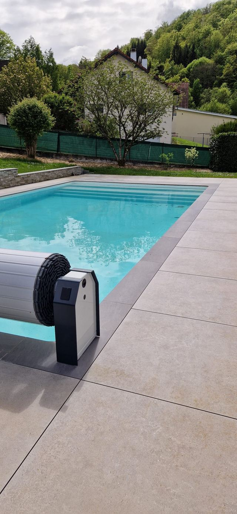
Conception
Relevé du terrain, plan à l'échelle, choix des matériaux et des essences. Vous voyez le jardin avant qu'il n'existe.
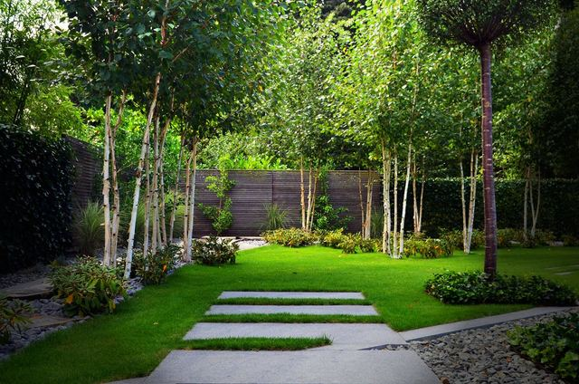
Paysagiste à Besançon
Conception, réalisation et entretien. Un seul interlocuteur du premier relevé de terrain à la dernière taille — et des matériaux choisis pour ce qu'ils deviennent, pas pour ce qu'ils coûtent le jour de la pose.
25
ans de métier
30 km
rayon d'intervention
12
personnes sur le terrain
5,0
note moyenne sur 20 avis
Ce que nous faisons
Du plan de conception à l'entretien saisonnier, chaque étape est menée par les mêmes équipes. Rien ne se perd entre un commercial et une équipe de pose.

Relevé du terrain, plan à l'échelle, choix des matériaux et des essences. Vous voyez le jardin avant qu'il n'existe.
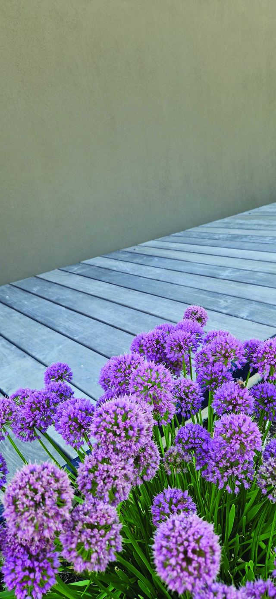
Terrasses, dallages, murets, clôtures, plantations. Le gros œuvre du jardin, exécuté par ceux qui l'ont dessiné.
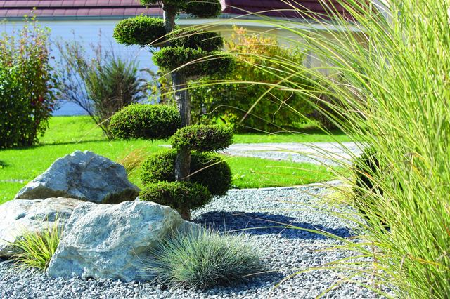
Tailles, tontes, élagage, remise en état. Un passage régulier vaut mieux qu'une reprise tous les cinq ans.
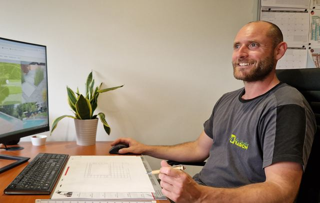
Maison Rivage
Vingt-cinq ans d'aménagement paysager, et la même conviction : un jardin se juge dix ans après sa livraison. Les créations sont donc pensées pour vieillir, pas pour photographier.
Un seul interlocuteur
Celui qui relève votre terrain est celui qui suit le chantier, puis l'entretien.
Des matériaux choisis pour ce qu'ils deviennent
Grès cérame, bois exotique, acier corten, pierre naturelle : ce qui tient dans le temps, pas ce qui brille à la pose.
« Un jardin réussi, c'est celui qu'on oublie d'admirer parce qu'on y vit. »
Le fondateur
Réalisations
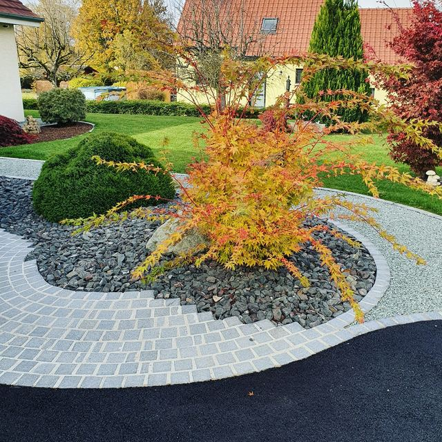
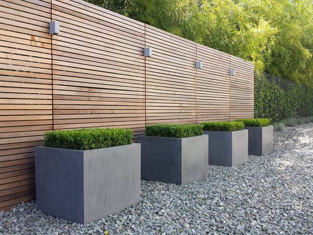
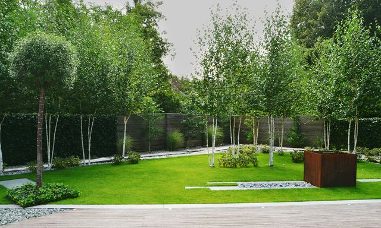
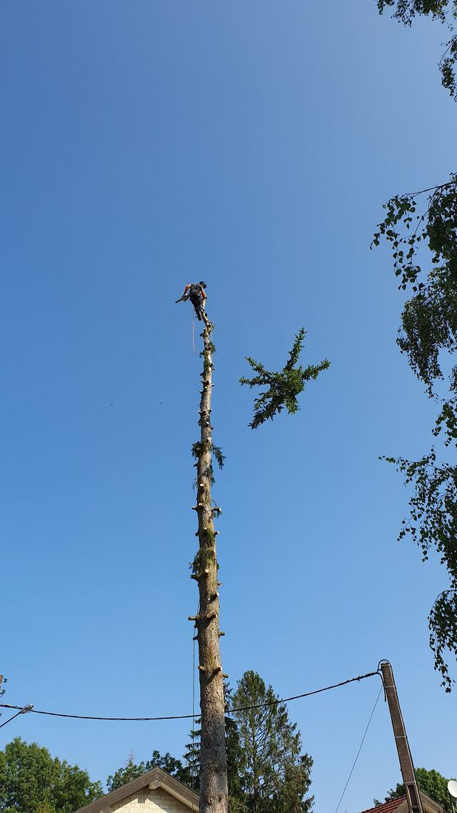
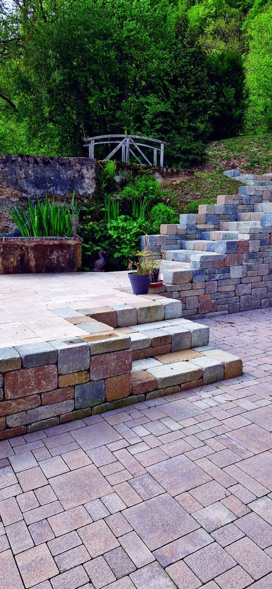
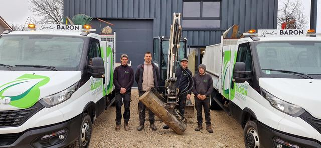
Parlons de votre projet
Décrivez-nous votre extérieur en quelques lignes, ou appelez-nous directement. Nous venons relever les cotes sur place avant de chiffrer quoi que ce soit.